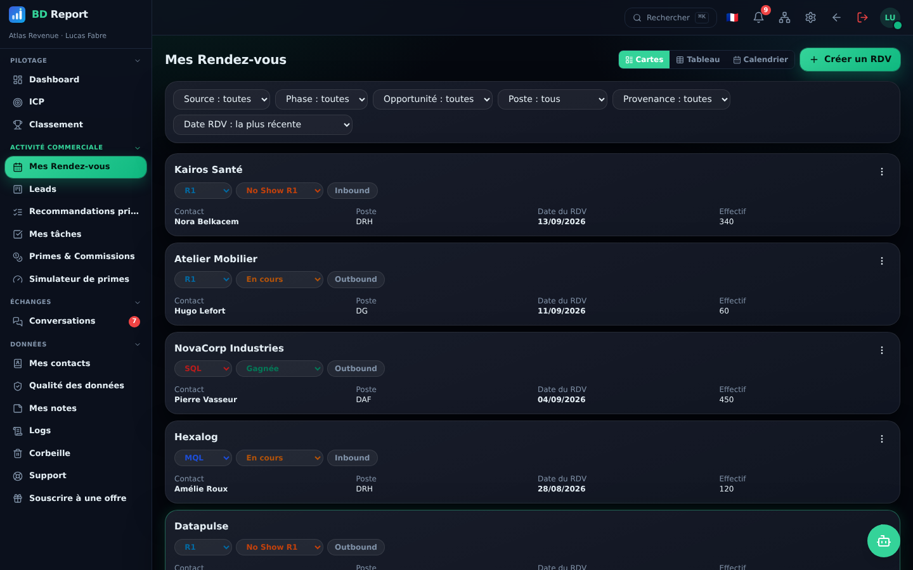
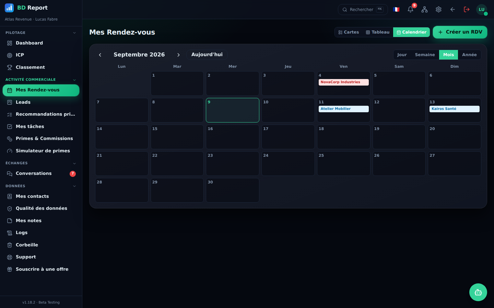
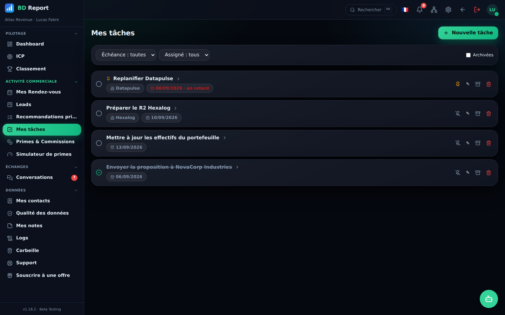

Créer un RDV prend 20 secondes, le faire suivre 5. Sous-rendez-vous pré-remplis, automatisations de phases, calendrier multi-vues et tâches priorisées : BD Report enlève l'administratif pour vous laisser au téléphone.
Contacts multiples, LinkedIn, secteur, notes — et le rendez-vous suivant se pré-remplit tout seul. Les doublons sont détectés avant d'exister.
Gagnée → SQL, Perdue → KO avec motif, date de passage SQL demandée au bon moment : la donnée reste propre sans effort.
No-shows à replanifier, opportunités à pousser, leads perdus à relancer après 6 mois : la page Tâches prioritaires pense pour vous.



Rejoignez la bêta exclusive — places limitées.
Se connecter à mon espace